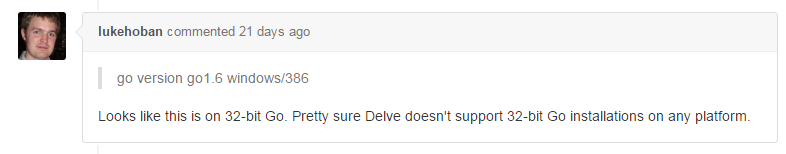

最近在用 golang 写个小工具，碰到一个坑。
golang 现在没有特别好用的开发调试工具，因为对 idea 比较熟，所以选用了 idea + go plugin ，装好后，运行没有问题，
偏偏没法调试，一点 debug 就报 panic: runtime error: slice bounds out of range 的错误，1
2
3
4
5
6
7
8
9
10
11
12
13
14
15d:\Users\XX\.IdeaIC2016\config\plugins\Go\lib\dlv\windows\dlv.exe --listen=localhost:53066 --headless=true exec V:\TEMP\go-junctiongo --
GOROOT=C:/env_junction/go_x86
GOPATH=E:/go-workspace/go-junction
C:/env_junction/go_x86\bin\go.exe build -o V:\TEMP\go-junctiongo -gcflags "-N -l" E:\go-workspace\go-junction\src\go-junction.go
panic: runtime error: slice bounds out of range
goroutine 9 [running]:
github.com/derekparker/delve/dwarf/frame.parseFDE(0xc0824f8000, 0xbbd990)
C:/BuildAgent/work/gopath/src/github.com/derekparker/delve/dwarf/frame/parser.go:74 +0x406
github.com/derekparker/delve/dwarf/frame.Parse(0xc0822ae000, 0x139c8, 0x13a00, 0x295eb8, 0xde3b90, 0x0, 0x0, 0x0)
C:/BuildAgent/work/gopath/src/github.com/derekparker/delve/dwarf/frame/parser.go:33 +0x1c8
github.com/derekparker/delve/proc.(*Process).parseDebugFrame(0xc082070500, 0xc0820338f0, 0xc0820fc6f0)
C:/BuildAgent/work/gopath/src/github.com/derekparker/delve/proc/proc_windows.go:196 +0x4df
created by github.com/derekparker/delve/proc.(*Process).LoadInformation
C:/BuildAgent/work/gopath/src/github.com/derekparker/delve/proc/proc.go:157 +0x112
最后在官方 github issue 中找到原因：

https://github.com/derekparker/delve/issues/443
原来调试工具 delve 不支持 x86 的 go ！！！解决方就是换用 x64 就可以了。